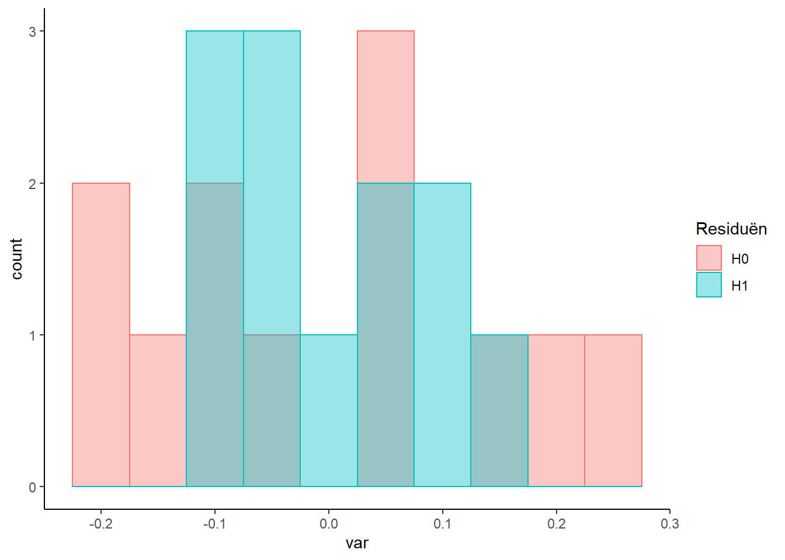

Variantieanalyse
Men doet onderzoek naar de melksnelheid van drie verschillende rassen koeien (HF, MRY en RHF) waarbij de melksnelheid in kg/min is gemeten bij een aantal koeien van deze rassen, zie hieronder:

Melkgift is de responsvariabele en ras de verklarende variabele. Nu is de vraag of de rassen van elkaar verschillen in melkgift. Uitgedrukt in hypotheses:
- H0: gemiddelde melkgift is gelijk voor de drie rassen
- H1: gemiddelden melkgift zijn niet allemaal gelijk voor de drie rassen
Onder de H0 kan de data beschreven worden als één populatie met gemiddelde is 3.04 kg/min. Onder de H1 heeft ieder ras een eigen gemiddelde.
We kunnen in de grafiek al zien dat ras MRY nogal afwijkt van de andere twee. Met een ANOVA kunnen we berekenen hoe waarschijnlijk het is dat we een minstens zo afwijkend patroon zien als de H0 wel waar is (dus geen verschil).
Hoe voeren we dat uit in R:
fit <- lm(Melksnelheid ~ ras, data=koeien)
summary(fit)##
## Call:
## lm(formula = Melksnelheid ~ ras, data = koeien)
##
## Residuals:
## Min 1Q Median 3Q Max
## -0.12000 -0.06567 -0.01833 0.06250 0.15800
##
## Coefficients:
## Estimate Std. Error t value Pr(>|t|)
## (Intercept) 2.95200 0.04589 64.334 2.67e-13 ***
## rasMRY 0.25800 0.06883 3.748 0.00457 **
## rasRHF 0.01467 0.07493 0.196 0.84916
## ---
## Signif. codes: 0 '***' 0.001 '**' 0.01 '*' 0.05 '.' 0.1 ' ' 1
##
## Residual standard error: 0.1026 on 9 degrees of freedom
## Multiple R-squared: 0.6427, Adjusted R-squared: 0.5633
## F-statistic: 8.094 on 2 and 9 DF, p-value: 0.009743Op de laatste regel van de output staat het resultaat van de F-toets. De p-waarde is 0.0097432. Het is dus heel onwaarschijnlijk dat de H0 waar is, en kunnen die met een gerust hart verwerpen.
De F-waarde is 8.0941106. De waarde staat voor de verhouding van verklaarde variantie door het model en overgebleven variantie. Hoe grote de F-waarde, des te beter het model de totale variantie verklaart.
We kunnen de totale variantie en overgebleven variantie weergeven in een histogram:

De volgende opgave is gebaseerd op een onderzoek, gepubliceerd in the American Society of Animal Science. Het sporenelement silicium (Si) heeft een positieve invloed op de gezondheid van beenderen. In een onderzoek wil men de vraag beantwoord zien of het toevoegen van voedingssupplementen met silicium aan het rantsoen van zogende merries het siliciumgehalte in het bloed van veulens beïnvloedt. In een experiment met 15 zogende merries van hetzelfde ras en ongeveer dezelfde leeftijd probeert men 3 verschillende doses voedingssupplementen met silicium uit. De 15 merries worden via loting toebedeeld aan een specifieke dosis. Na enige tijd meet men het siliciumgehalte in het bloed van de veulens. De resultaten:
| dosis | Si-gehalte (\(\mu\)g/l) |
|---|---|
| 1 | 129; 137; 129; 134; 139 |
| 2 | 133; 148; 142; 139; 134 |
| 3 | 138; 148; 140; 145; 148 |
Opdracht 7 Silicium
- Maak een Excelbestand van bovenstaande data. Verzin een goede structuur
- Zorg dat het Excelbestand in je projectfolder van RStudio staat
- Schrijf een script dat de volgende zaken uitvoert:
- Importeer Excel
- Test of dosis een effect heeft op siliciumgehalte in het bloed van de veulen m.b.v. een GLM